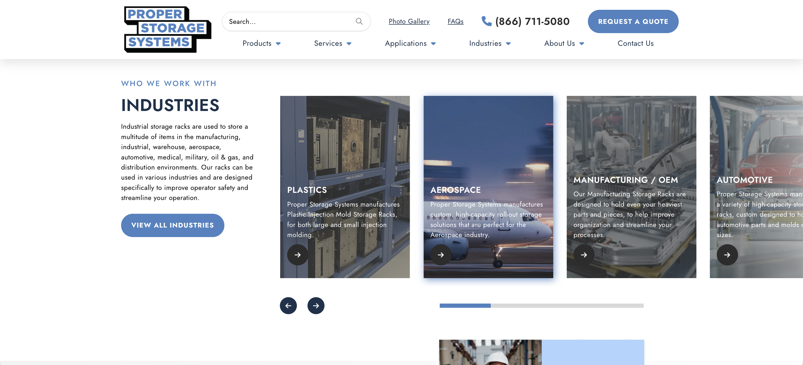
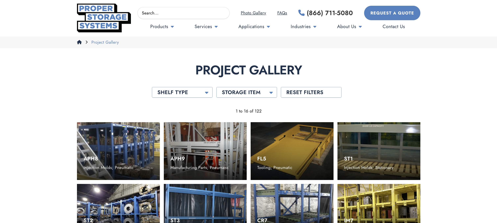

Proper Storage
Systems Redesign
Redesigning an industrial B2B website to be responsive, modern, and conversion-optimized — turning a 7-year-old static site into a lead generation machine for OEM, aerospace, and automotive buyers.

Full-width desktop mockup, responsive layout preview, or before/after comparison imagery.
A 7-year-old site
holding back real growth
Proper Storage Systems manufactures heavy-duty industrial storage racks capable of holding up to 12,000 lbs. Their products roll-out racks, die storage systems, pneumatic shelving serve the most demanding environments in aerospace, automotive, and OEM manufacturing.
Despite a robust product line and blue-chip clients like Boeing, 3M, and NASA, their website was a conversion bottleneck: non-responsive, visually dated, and lacking the clarity industrial buyers need to act quickly.
"The current site is not responsive. The new site needs to be much lighter and modern looking. Success, for us, is launching a site that works well on all devices and looks far more modern."
— Proper Storage Systems Client6-month analytics snapshot before redesign (Jul 2023 – Jan 2024):
23% Direct · 2% Referral
32% Contact page · 8% Quick contact
B2B industrial: 2–4%
How can UX design increase lead generation for B2B industrial websites?
By clarifying the user journey, surfacing strong calls-to-action, and simplifying the RFQ process, UX can guide industrial buyers — who are evaluating on tight timelines — toward requesting a quote, submitting a question, or scheduling a consultation.
Understanding the
industrial buyer
Three intersecting research methods informed the redesign. The goal: understand not just what users want to see, but what decisions they're making and how fast they need to make them.


Five phases from
discovery to launch
- Analytics audit
- Stakeholder KOM
- Keyword research
- Competitive analysis
- Information architecture
- Wireframing
- HP design + reviews
- Revisions
- IP design + reviews
- Prototyping
- Design file handoff
- D2D handoff
- Design QA round 1
- Content population
- Design QA round 2
- Site launch
- Content must be thoroughly audited to prevent incorrect technical specifications from going live
- Highly customizable products complicate the ordering and quotation interface
- B2B buyers need rapid access to spec data — information architecture was critical
- Budget constraints required prioritizing highest-impact UX improvements first
- Built a modular content system with QA checkpoints before each phase handoff
- Simplified RFQ with a structured form, visual dimension guides, and "add item" flow
- Implemented clear product hierarchy and breadcrumb navigation across all pages
- Focused redesign scope on homepage, product detail pages, RFQ, and gallery first
Seven features
built for industrial buyers
Results, measured
Metrics tracked over the 6 months following launch (Aug 2024 – Feb 2025) against the pre-redesign baseline period.


Screenshots of the original non-responsive homepage, RFQ flow, or gallery experience.


Polished desktop/mobile redesign visuals, responsive layouts, and optimized CTA sections.
- Non-responsive layout — broken on mobile and tablet
- Flat navigation with no hierarchy or product grouping
- RFQ form with no visual guidance for dimensions
- Static photo gallery with no filtering capability
- Inconsistent branding across product pages
- 1.48% overall conversion rate
- Fully responsive across all breakpoints — mobile-first architecture
- Structured dropdown navigation with product, services, applications, and industries
- RFQ page with dimensional diagrams, item-by-item entry, and visual guides
- Filterable gallery by shelf type and storage item — 150+ images navigable
- Consistent brand language, transparent nav, and persistent CTAs
- 2.7% conversion rate — within B2B industrial benchmark range
What I'd do
differently
The clearest win from this project was proving that UX decisions have measurable downstream impact on B2B revenue. A conversion rate improvement from 1.48% to 2.7% on a site receiving over 6,000 visits per half-year is a real number — the kind of outcome that makes the case for design investment to leadership teams in industrial companies that are traditionally skeptical of it.
If I were starting again, I'd push to introduce usability testing in Phase 2, not Phase 4. We made the right calls on the RFQ form and gallery — but those decisions were informed by stakeholder interviews and competitive benchmarking, not direct user observation. Earlier usability testing would have reduced the number of QA-round corrections and created more defensible rationale for design choices during client reviews.
The other lesson: customization complexity is a UX problem disguised as a product problem. Helping industrial buyers understand what they're ordering — before they pick up the phone — is where design can create the most leverage in a B2B manufacturing context.